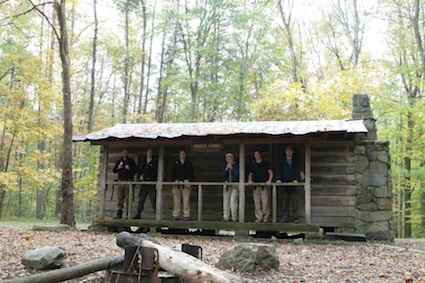

Community Life
Ways to Connect:
Weekly Sunday Night Small Groups
Wednesday Night "Brown Bag" Dinners
Weekend Retreats
Monthly Women's Book Club
Friday Morning Men's Coffee
Board Game Nights
Co Ed Softball and Men's Basketball teams
Weekend Camping Trips
Media
Resources
40 Days - A guide to your first 40 days as a newly baptized Christian.
Member Blogs
Our Partners
The Millers in Tanzania
Room in the Inn
Lawrence Avenue Church of Christ
Ukrainian Education Center
Acklen Partners
Over the years, Acklen has continually sought to discern its relationship to the community. Specifically, we seek tangible ways to be salt and light in Nashville. We value partnering with the many excellent local ministries and non-profits in the city. Among those, we highlight local ministries and non-profits where a member works, serves on the board, volunteers in an integral way, or where Acklen has a collective history.
We are proud to lift up these as Acklen Partners:
Bridges for the Deaf and Hard of Hearing
Friends Life Community
LIFE Program-TN Prison for Women
Nations Ministry
Open Table
Ronald McDonald House
Room in the Inn
Safe Haven Family Shelter
St. Thomas Family Health Center South
Siloam Family Health Center
United4Hope
Pictures
